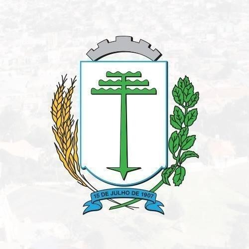

De acordo com o IBGE, o distrito foi criado com a denominação de Irati, por Lei municipal de 25 de fevereiro de 1903, subordinado ao município de Santo Antônio de Imbituva, tendo sua emancipação em 15 de julho de 1907. Em divisão territorial datada de 01 de julho de 1960 o município é constituído de 04 distritos: Irati, Gonçalves Junior, Guamirim e Itapará. (IPARDES, 2020).
Área Área territorial: 1000,004km²
Fonte: IPARDES, 2020
Coordenadas geográficas
Altitude (metros): 836
Latitude 25 º 28 ' 02 '' S
Longitude 50 º 39 ' 04 '' W
Fonte: IBGE, 2020

Municípios Limítrofes de Irati
Irati é um município do estado do Paraná que pertence a Mesorregião Geográfica Sudeste Paranaense e da Microrregião de Irati. (IPARDES, 2020).
Irati faz divisa com os seguintes municípios, ao norte com Imbituva e Prudentópolis, ao Sul com Rio Azul e Rebouças, no leste com Fernandes Pinheiro e oeste com Inácio Martins.
Formação geológica
Irati está localizado sobre a Bacia Sedimentar do Paraná, que é uma enorme depressão no sul do Brasil, onde se depositaram sedimentos e derrames de lava, que formaram rochas ao longo de cerca de 400 milhões de anos. A Formação Irati é de idade Permiano Superior. Geologicamente o solo pertence ao Permiano Carbonífero, com topografia marcada por encostas suaves a intermediárias, encostas íngremes, vertentes retilíneas, topos planos, solos acinzentados ou vermelhos ao Norte e castanhos ao Sul.
A Formação Irati, é composta por siltitos, argilitos e folhelhos sílticos de cor cinza clara a escura, folhelhos pirobetuminosos, localmente em alternância rítmica com calcários creme silicificados e restritos níveis conglomeráticos, foi depositada no que era na época, entre 250 e 270 milhões de anos, um golfo do antigo supercontinente Gondwana aberto para o então Oceano Panthalassa.
As rochas sedimentares se originaram em diferentes ambientes, como marinho costeiro, marinho profundo, glacial e até mesmo desértico. Com a separação dos continentes, uma imensa quantidade de magma extravasou e cobriu estas rochas. O material resfriado formou o basalto e o magma consolidado em fraturas deu origem a diques e soleiras de diabásio, comuns no município de Irati. As rochas da Formação Irati são de aproximadamente 285 milhões de anos atrás, no permiano recente, ou seja, há 60 milhões de anos antes do aparecimento dos dinossauros.
Durante o Período Permiano é notável que os animais dominantes foram os répteis e anfíbios. O “Mesosaurus brasiliensis” era provavelmente o mais importante réptil e é o mais importante fóssil da Formação Irati, encontrado na região sul do Brasil – especialmente na de Irati - e África do Sul.